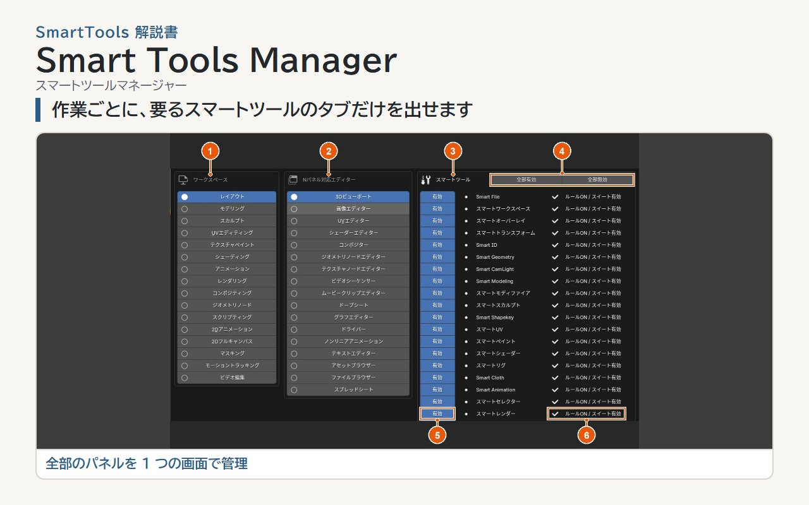
Smart Tools Manager
スマートツールマネージャー
作業ごとに、要るスマートツールのタブだけを出せます
代表的な機能：「全部のパネルを 1 つの画面で管理」「ワークスペースでタブが切り替わる」
SmartTools
版 1.0.0 ／ Blender 5.1.0 以上 ／ アドオン 23 個
モデリング・UV・材質・ペイント・リグ・アニメーション・撮影・画面の管理を手助けする、23 個の Blender アドオンの集まりです。ZIP をダウンロードして Blender に入れ、アドオンごとの解説書を見ながら使えます。
下の画像は、各製品の代表的な機能をまとめたものです。画像を押すと解説書の「代表的な機能」へ、「作例」から実際の作業例へ進めます。
SmartTools 全体を管理するためのツールです。ほかのアドオンのパネルをどの画面に出すかを、一つの画面でまとめて決めます（全体仕様書 6 章）。

スマートツールマネージャー
作業ごとに、要るスマートツールのタブだけを出せます
代表的な機能：「全部のパネルを 1 つの画面で管理」「ワークスペースでタブが切り替わる」
Smart Geometry Suiteは描いた間取り線から壁を起こします。Smart Modeling Suiteは、すでにあるモデルの耳を直し、頂点が対応する別モデルへ同じ修正を写せます。

スマートジオメトリー スイート
地形・がれき・破片・基本形状を、ボタンで作れます
代表的な機能：「あとから数値で直せる基本形状」「地形と水の流れる線をボタンで作る」「19 種類のデブリと破片」
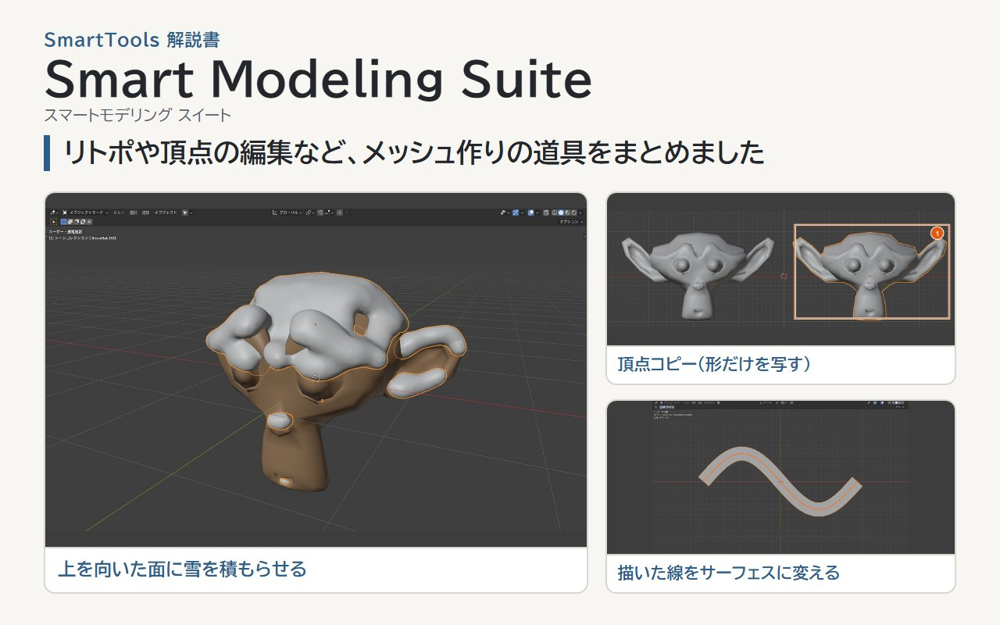
スマートモデリング スイート
リトポや頂点の編集など、メッシュ作りの道具をまとめました
代表的な機能：「クアッドリトポ（表面に描く）」「頂点コピー（形だけを写す）」「頂点スライド（辺に沿わせる）」
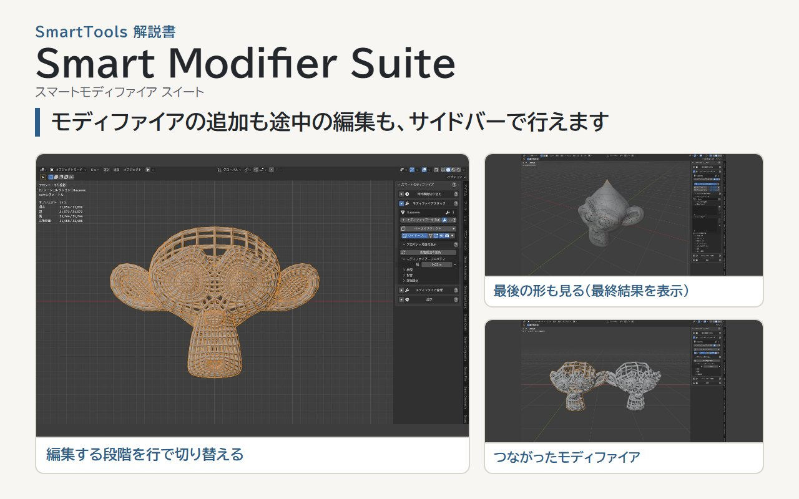
スマートモディファイア スイート
モディファイアの追加も途中の編集も、サイドバーで行えます
代表的な機能：「編集する段階を行で切り替える」「最後の形も見る（最終結果を表示）」「つながったモディファイア」
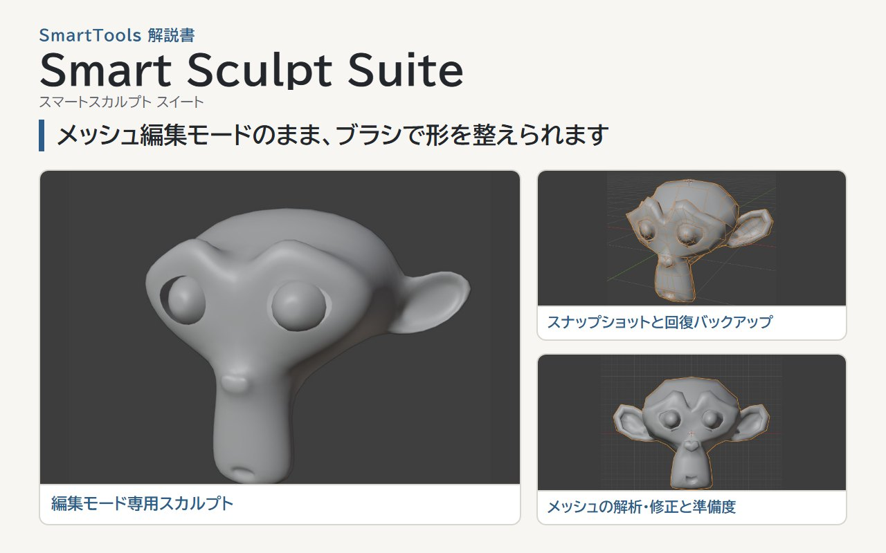
スマートスカルプト スイート
メッシュ編集モードのまま、ブラシで形を整えられます
代表的な機能：「編集モード専用スカルプト」「スナップショットと回復バックアップ」「メッシュの解析・修正と準備度」
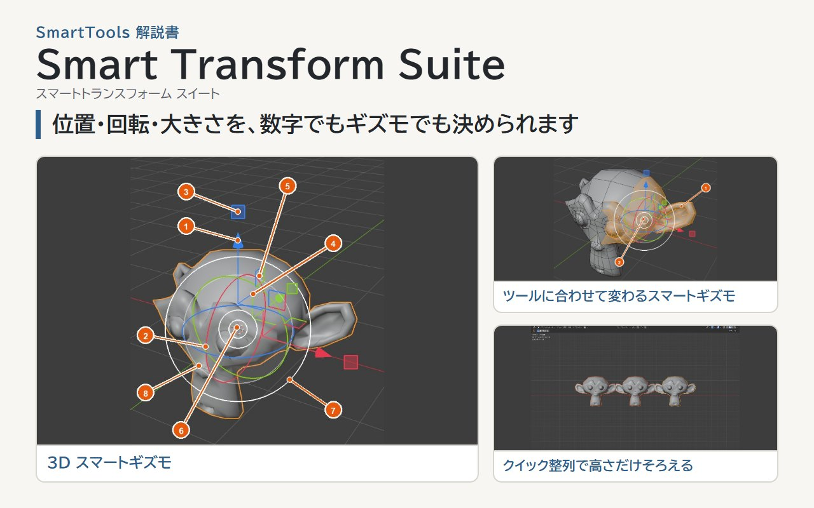
スマートトランスフォーム スイート
位置・回転・大きさを、数字でもギズモでも決められます
代表的な機能：「3D スマートギズモ」「ツールに合わせて変わるスマートギズモ」
ノードの名前を整理するならSmart Node Suite、トゥーン材質の影の向きを調整するならSmart Shader Suite。複数のレンダーパスを合成に用意する作業は、撮影・仕上げのSmart Composite Suiteで確認できます。
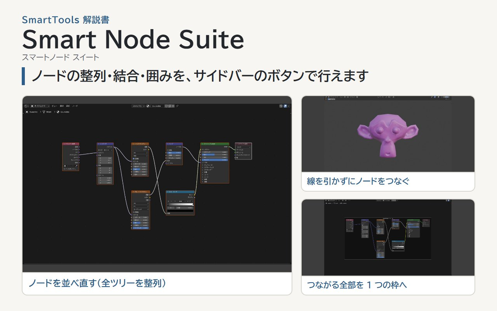
スマートノード スイート
ノードの整列・結合・囲みを、サイドバーのボタンで行えます
代表的な機能：「ノードを並べ直す（全ツリーを整列）」「線を引かずにノードをつなぐ」「つながる全部を 1 つの枠へ」
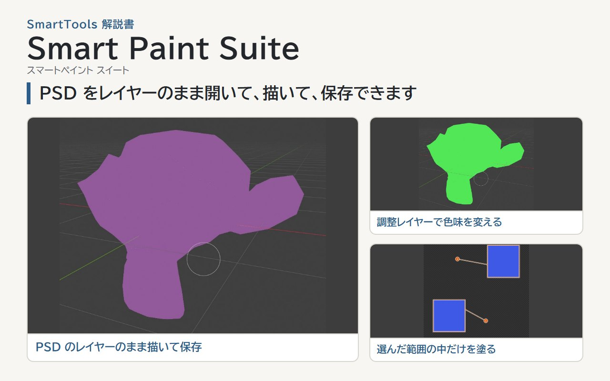
スマートペイント スイート
PSD をレイヤーのまま開いて、描いて、保存できます
代表的な機能：「PSD のレイヤーのまま描いて保存」「調整レイヤーで色味を変える」「選んだ範囲の中だけを塗る」
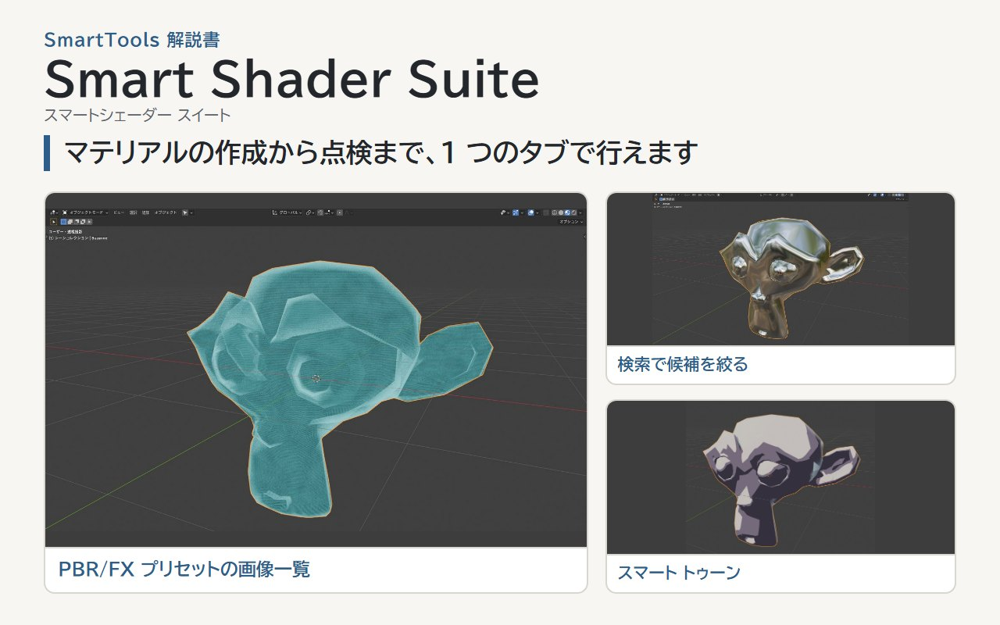
スマートシェーダー スイート
マテリアルの作成から点検まで、1 つのタブで行えます
代表的な機能：「PBR/FX プリセットの画像一覧」「検索で候補を絞る」「スマート トゥーン」
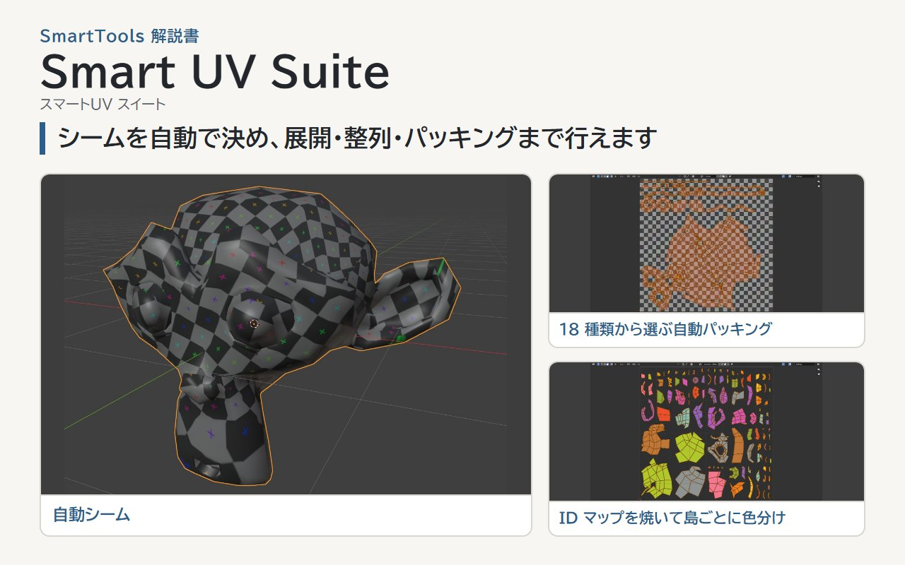
Smart Rig Suiteは手首を曲げたときの袖口の追従を調整します。Smart Animation Suiteは保存したおじぎを今のポーズに混ぜ、Smart Selector Suiteはブラウザーのスライダーから表情の値を動かします。
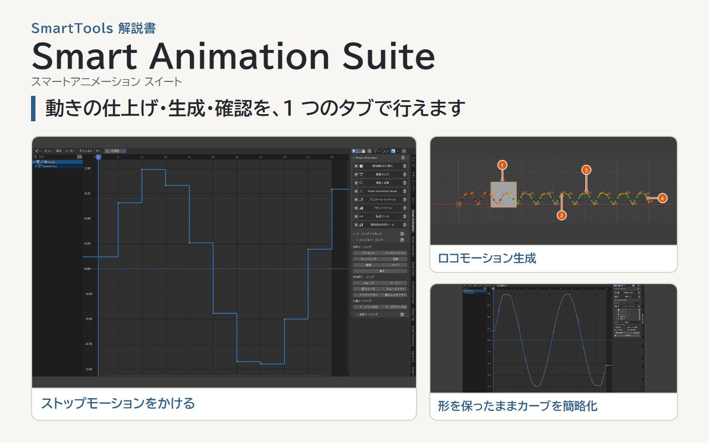
スマートアニメーション スイート
動きの仕上げ・生成・確認を、1 つのタブで行えます
代表的な機能：「スタジオの「最強統合ディレクター」」「ロコモーション生成」「モーション可視化」
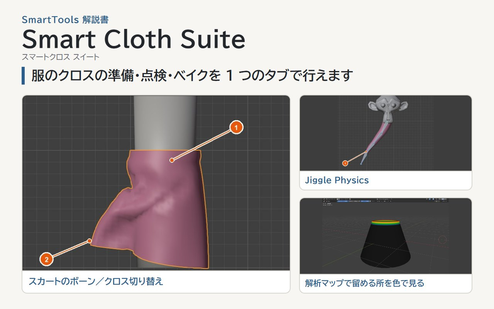
スマートクロス スイート
服のクロスの準備・点検・ベイクを 1 つのタブで行えます
代表的な機能：「スマートワークフロー」「スカートのボーン／クロス切り替え」「Jiggle Physics」
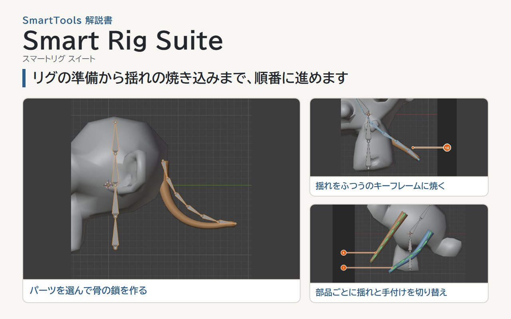
スマートリグ スイート
リグの準備から揺れの焼き込みまで、順番に進めます
代表的な機能：「パーツを選んで骨の鎖を作る」「揺れをふつうのキーフレームに焼く」「部品ごとに揺れと手付けを切り替え」
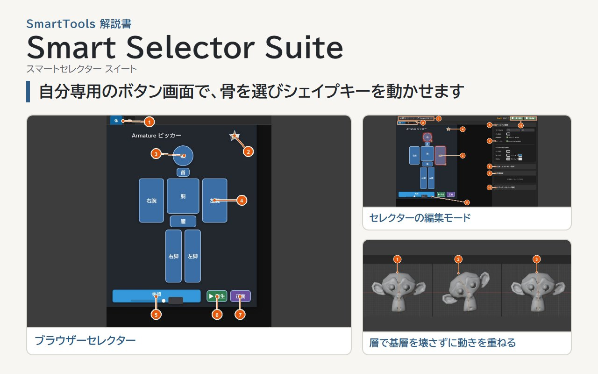
スマートセレクター スイート
自分専用のボタン画面で、骨を選びシェイプキーを動かせます
代表的な機能：「ブラウザーセレクター」「セレクターの編集モード」「層で基層を壊さずに動きを重ねる」
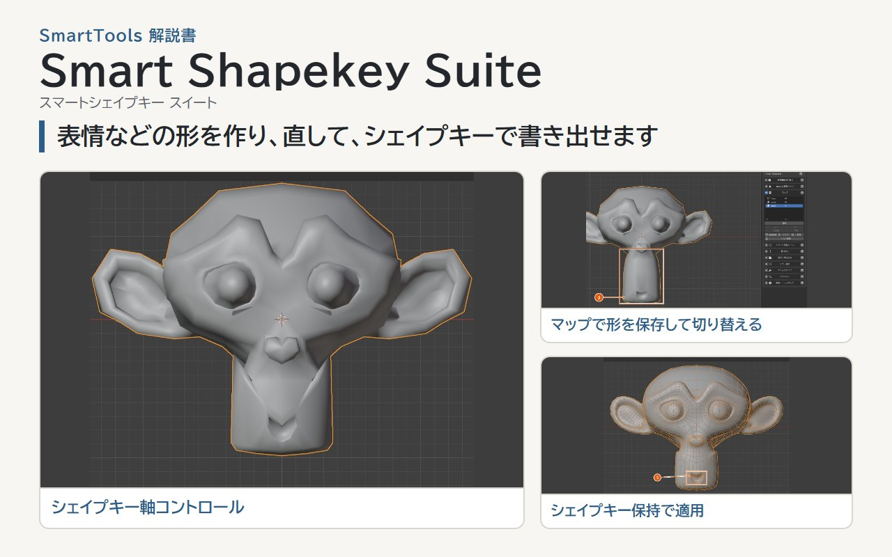
スマートシェイプキー スイート
表情などの形を作り、直して、シェイプキーで書き出せます
代表的な機能：「マップで形を保存して切り替える」「シェイプキー軸コントロール」「シェイプキー保持で適用」
Smart CamLight Suiteは顔に光を残したまま床を照明から外せます。納品するパスをBeautyとAlphaに絞るならSmart Render Suite、合成に必要なパスをビューレイヤー側で有効にするならSmart Composite Suiteです。
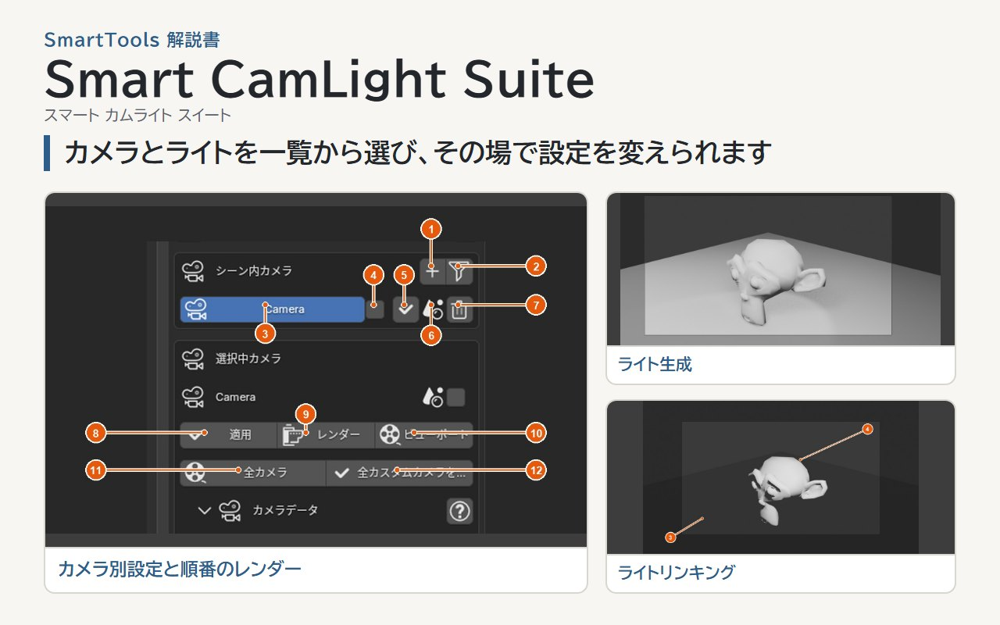
スマート カムライト スイート
カメラとライトを一覧から選び、その場で設定を変えられます
代表的な機能：「カメラ別設定と順番のレンダー」「ライト生成」「ライトリンキング」
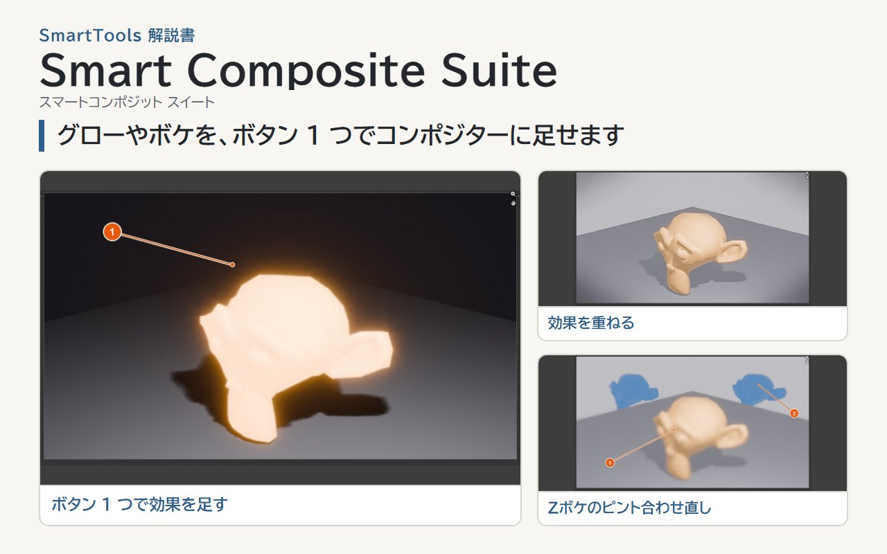
スマートコンポジット スイート
グローやボケを、ボタン 1 つでコンポジターに足せます
代表的な機能：「ボタン 1 つで効果を足す」「効果を重ねる」「Zボケのピント合わせ直し」
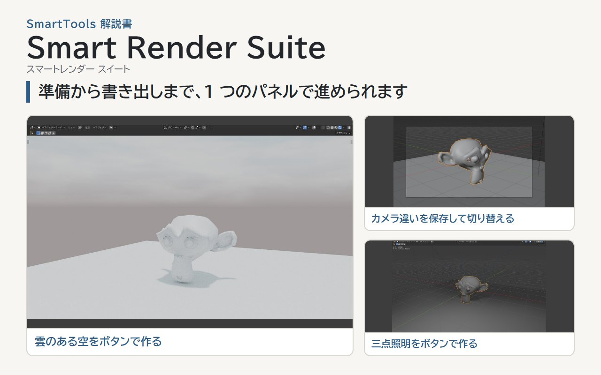
スマートレンダー スイート
準備から書き出しまで、1 つのパネルで進められます
代表的な機能：「3 つのボタンで準備から書き出しまで」「パスの書き出しノードをボタンで組む」「カメラ違いを保存して切り替える」
Smart Workspace Suiteは作業画面を切り替えてもモデルを同じ横顔で表示し、Smart Overlay Suiteは隠れた辺だけを破線で示します。編集前の形を保存して戻すにはSmart File Suite、選択範囲とファイル全体のID使用数を調べるにはSmart ID Suiteを使います。
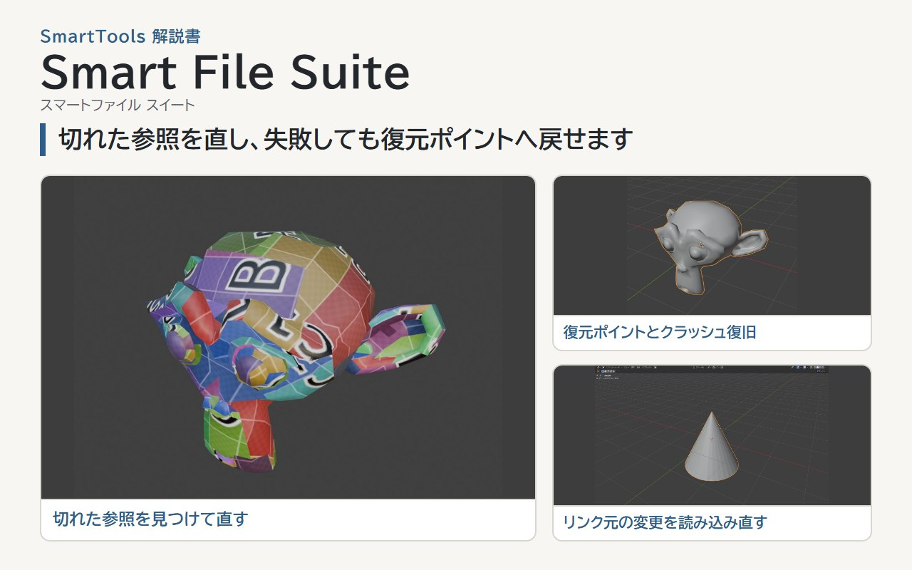
スマートファイル スイート
切れた参照を直し、失敗しても復元ポイントへ戻せます
代表的な機能：「切れた参照を見つけて直す」「確かめてから「変更を適用」」「復元ポイントとクラッシュ復旧」
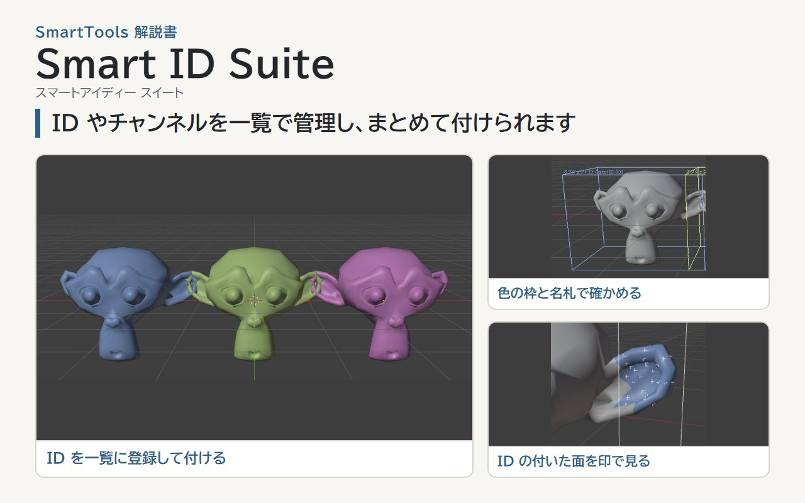
スマートアイディー スイート
ID やチャンネルを一覧で管理し、まとめて付けられます
代表的な機能：「ID を一覧に登録して付ける」「色の枠と名札で確かめる」「中身を調べ、その場で直す」
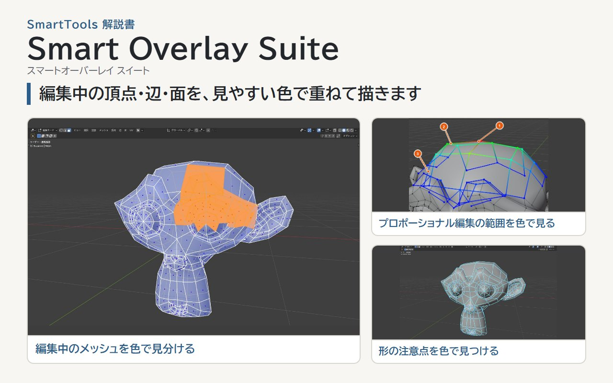
スマートオーバーレイ スイート
編集中の頂点・辺・面を、見やすい色で重ねて描きます
代表的な機能：「編集中のメッシュを色で見分ける」「プロポーショナル編集の範囲を色で見る」「形の注意点を色で見つける」
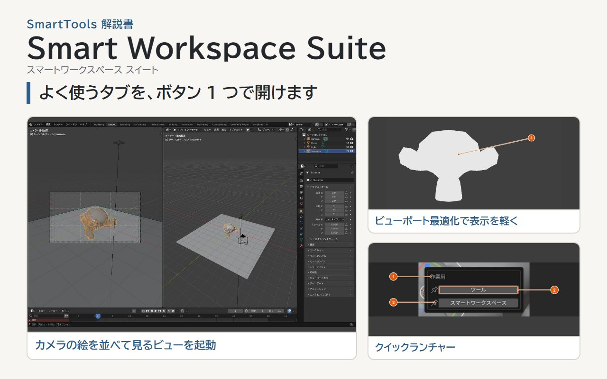
スマートワークスペース スイート
よく使うタブを、ボタン 1 つで開けます
代表的な機能：「クイックランチャー」「タブの名前と並びを変える」「ビューポート最適化で表示を軽く」
SmartTools に付属するツールです。
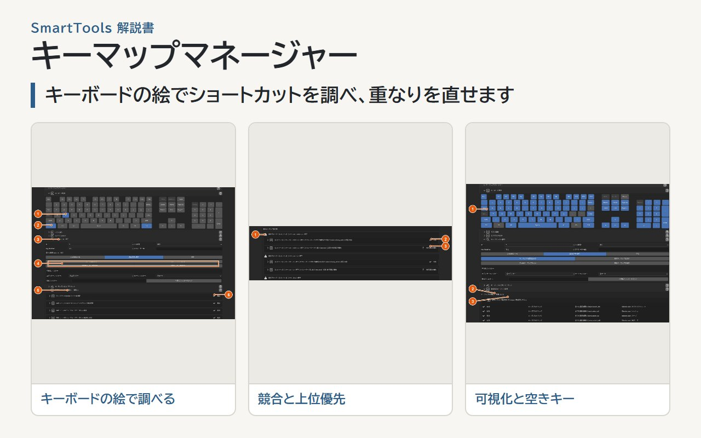
ZIP は展開せずに、そのまま Blender に入れます（入れ方）。
| アドオン | ファイル | 大きさ | SHA-256 |
|---|---|---|---|
| Smart Tools Manager | Smart_Tools_Manager_1.0.0.zip | 82 KB | faf26738bdb1ceb19126c3eb6349cdfb5de3021a0036311543a6d5e0df9288a4 |
| Smart Geometry Suite | Smart_Geometry_Suite_1.0.0.zip | 676 KB | 1508f6be220e9991c1b2da028cd0955aa4195782ef6cc58fd3c8d7b69a822ad4 |
| Smart Modeling Suite | Smart_Modeling_Suite_1.0.0.zip | 3,050 KB | 007ef7d6095124a7e6c4a67ca027c8ae2ce36cd33707aa48cc397c03ee8b807f |
| Smart Modifier Suite | Smart_Modifier_Suite_1.0.0.zip | 1,569 KB | c03e751eb491a0a9a40a38b47248503a9de127067ef3a497b99a9bdf92d899fb |
| Smart Sculpt Suite | Smart_Sculpt_Suite_1.0.0.zip | 10,772 KB | 55c29a894ef7c89c5f7c5c2d7ddd8bcf5c937aa1e16cd90309e29260ca2cb42c |
| Smart Transform Suite | Smart_Transform_Suite_1.0.0.zip | 650 KB | 530cc66b9e26b677248526712c3ebf6486861273069b570a635906e6561df6d3 |
| Smart Node Suite | Smart_Node_Suite_1.0.0.zip | 398 KB | 03e397530ffe03b8868fb366ab944588f39b1a4a3d724975105074d8833e93d7 |
| Smart Paint Suite | Smart_Paint_Suite_1.0.0.zip | 954 KB | 2d2fc5d38cea71c2901f4b41ce4fb6e7c332579934ff5551c455697d3d2da521 |
| Smart Shader Suite | Smart_Shader_Suite_1.0.0.zip | 11,425 KB | b1ffa15b540a4a20380da291fbf09135291e2db297f9048fd6309de3b7ceb1e8 |
| Smart UV Suite | Smart_UV_Suite_1.0.0.zip | 4,162 KB | 74396b75ce8b952160701a1ae70fa530faf026decb7eb53c2f75b480837f3d56 |
| Smart Animation Suite | Smart_Animation_Suite_1.0.0.zip | 1,080 KB | 61ef4ebf18be584d519717b8f43f2debc5d5b91e535598b6b7fa7efec139e6d6 |
| Smart Cloth Suite | Smart_Cloth_Suite_1.0.0.zip | 265 KB | da7ceb56fa8e0afec8f038c9cd612246007ab7d0f22c034e618266d8ce555162 |
| Smart Rig Suite | Smart_Rig_Suite_1.0.0.zip | 710 KB | c0dfbf66ee5ea5c24cc1d0353fe05cbca92a7c42ce9eb35595b11f851e2b60bb |
| Smart Selector Suite | Smart_Selector_Suite_1.0.0.zip | 497 KB | 4fd5da58dd243783ccdb6a5a2dad2c89688840609e871d507fe448610ec1fe32 |
| Smart Shapekey Suite | Smart_Shapekey_Suite_1.0.0.zip | 4,148 KB | 7d8e3a241b8fd5a21592a9dfe7fc229be2896ace2fde76f5bfb180e3f2f9eeae |
| Smart CamLight Suite | Smart_CamLight_Suite_1.0.0.zip | 116 KB | 199d0564ccb6b4fbe4aa150b7fb5f7f73c1ca9e7be6bf15d148a0487a0713981 |
| Smart Composite Suite | Smart_Composite_Suite_1.0.0.zip | 2,607 KB | 30eb694462b766d89c145ae11f39197aeb16fab851a2d41023d5bb1dbe49a69e |
| Smart Render Suite | Smart_Render_Suite_1.0.0.zip | 757 KB | f73a74d5fb2224a2e6e401cdca050561b120272f09f8a96408b6e471667e3d67 |
| Smart File Suite | Smart_File_Suite_1.0.0.zip | 4,762 KB | 5cd3498af437d7431ec5f9c455eea9792fb4dedfa21e17e746974535f6826399 |
| Smart ID Suite | Smart_ID_Suite_1.0.0.zip | 123 KB | f337e241b35c625a8b8fc3206c005adde8ab78ca4aaebde2ee0fa58ee03cff80 |
| Smart Overlay Suite | Smart_Overlay_Suite_1.0.0.zip | 645 KB | 4e915f157b58909b622d08c854ac044cc788898069a8b9f8ef09717675ba1422 |
| Smart Workspace Suite | Smart_Workspace_Suite_1.0.0.zip | 833 KB | f11576dc71479377cdbf22cc73fbead5a106aebe9b8123d1c2b894339d136c55 |
| キーマップマネージャー | Keymap_Manager_1.0.0.zip | 50 KB | 307c265d76a8da5034ec4d6c8c06b6833c6d2f10bb15e6f001db1e79c731cc98 |
https://jelararagi.github.io/SmartTools/downloads/index.json（手順）有効化を確認し、下の製品の「開く場所」でエディター・モード・パネル名を確認してください。環境によってはサイドバーを開いてタブを切り替えます。
試した版、選択対象、モード、フレームを作例と合わせます。まず新規シーンか自分のファイルのコピーで試してください。この版の図解はWindows・Blender 5.1.2を基準にしています。
外部アドオン連携を使う場合は、その製品を別途入手し有効にしてください。たとえばSmart Rig SuiteのAuto-Rig Pro連携に、Auto-Rig Proの利用権は含まれません。
有料ストアで購入した商品の再取得、領収書、二重請求、返金は、購入確認メールか購入履歴に表示される購入先の窓口をご利用ください。手元の解説サイトから注文を照会することはできません。公開のGitHub画面に注文番号・メールアドレス・決済情報を書かないでください。